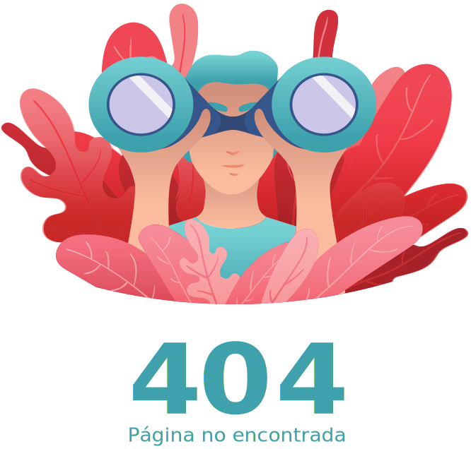

<div class="not-found">
  <div class="container-fluid d-flex justify-content-center align-items-center" style="min-height: 100vh;">
    
    <div class="mt-5 d-flex align-items-center justify-content-center">
      <button mat-stroked-button class="text-light bg-info">Regresar a Inicio</button>
    </div>
  </div>
</div>
